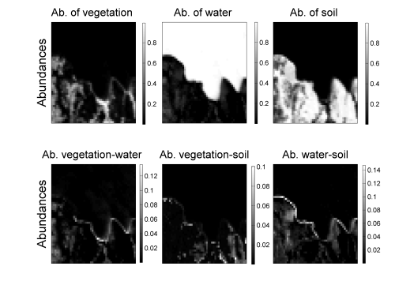

Supervised algorithm for (non-linear) GBM-based unmixing of hyperspectral image unmixing
A new nonlinear model called "generalized bilinear
model" (GBM) has been proposed to model the interactions between the macroscopic components of an hyperspectral image.
As a consequence, in addition to the standard abundance maps, the proposed model also provides maps for the possible
interactions between the materials, as illustrated in Fig. 1.

Fig. 1. The fraction maps estimated according to GBM for the Moffett Field scene (first row: linear abundances, second row: interaction terms).
The model is described in the paper published in IEEE Trans. Geosci. Remote Sens. in 2011:
- article
 [ .pdf - 2.0Mo ].
[ .pdf - 2.0Mo ].
Note that a short paper providing a brief review of bilinear models has been published in the IEEE WHISPERS 2011 proceedings:
- article [ .pdf - 500ko ].
Several algorithms have been proposed to solve the unmixing task when assuming the GBM. They are described and compared in the paper presented at IEEE IGARSS 2011:
- article [ .pdf - 841ko ].
One of the abundance estimation procedure (the so-called "Gradient descent algorithm", GDA) is available as MATLAB code:
- matlab codes
 [ .zip - 23.5Ko ].
[ .zip - 23.5Ko ].